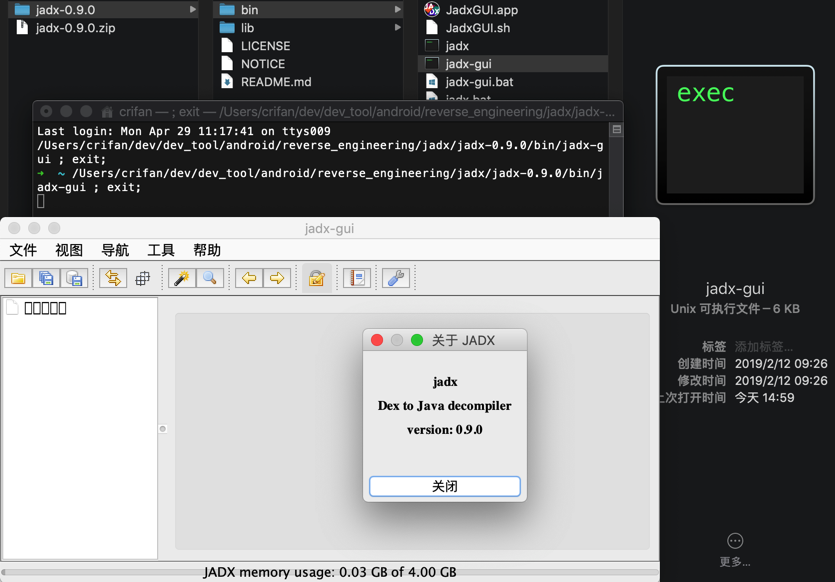
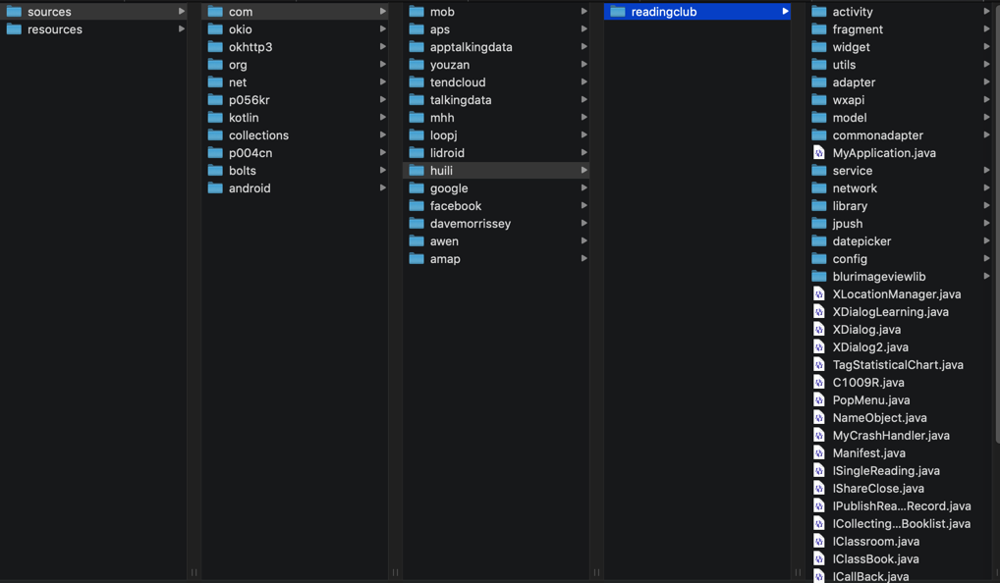

jadx从dex导出java
jadx可以直接从dex导出java源码：
切换到要导出代码的目录，已有dex文件要导出，则可以直接运行：
语法=命令
jadx dex_file.dex -d output_folder举例
jadx-0.9.0/bin/jadx dex_file.dex -d . jadx/jadx-1.0.0/bin/jadx com.ishowedu.child.peiyin8392664.dex -d com.ishowedu.child.peiyin8392664_java
- 输出
- 即可转换出源代码到当前目录下，输出有：
resourcessources- 有你要的源码
- 转换速度还是不错的
- 即可转换出源代码到当前目录下，输出有：
举例
from_v3.4.8_dex /Users/crifan/dev/dev_tool/android/reverse_engineering/jadx/jadx-0.9.0/bin/jadx ../../../../../xiaohuasheng/app_hook_dump_dex/FDex2/v3.4.8/com.huili.readingclub8825612.dex -d .
...
中间很多错误
...
WARN - Found 75 references to unknown classes
ERROR - 6 errors occurred in following nodes:
ERROR - Method: android.support.v4.provider.FontsContractCompat.getFontFromProvider(android.content.Context, android.support.v4.provider.FontRequest, java.lang.String, android.os.CancellationSignal):android.support.v4.provider.FontsContractCompat$FontInfo[]
ERROR - Method: cn.addapp.pickers.util.LogUtils.getTraceElement():java.lang.String
ERROR - Method: cn.jiguang.a.a.b.c.a(android.os.Message):void
ERROR - Method: cn.jiguang.d.b.f.a(int):boolean
ERROR - Method: cn.jiguang.d.d.m.a(android.content.Context, boolean):java.util.List<java.io.File>
ERROR - Method: cn.jiguang.g.e.a(java.lang.String, java.util.Map):cn.jiguang.g.e
WARN - 2299 warnings in 454 nodes
ERROR - finished with errors
转换后：
➜ from_v3.4.8_dex ll
total 0
drwxr-xr-x 3 crifan staff 96B 4 29 15:29 resources
drwxr-xr-x 13 crifan staff 416B 4 29 15:30 sources
转换后的代码用VSCode去打开的效果：
jadx-gui查看和导出代码
双击jadx-gui即可运行：

然后去打开对应的jar文件：com.huili.readingclub8825612-dex2jar.jar，即可看到包含了app业务逻辑的代码结构和包名：

然后展开后可以看到详细的代码：

然后如果想要导出全部代码，则可以去：
File -> Save All
然后稍等片刻：

即可在导出的sources文件夹中找到你要的源码：
